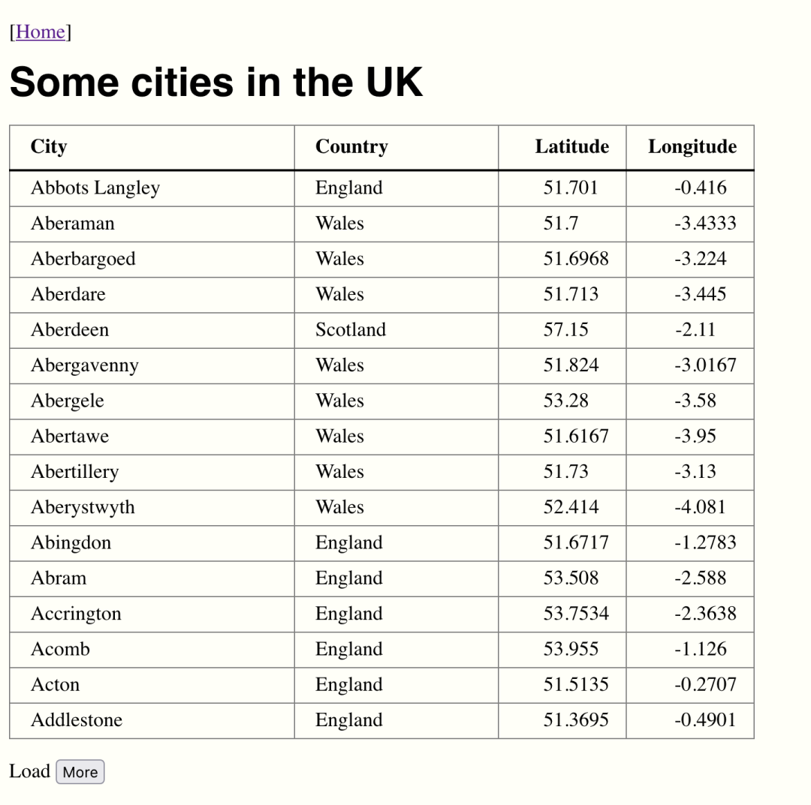

Back in January, on the xproc-dev mailing list, Andy Carver asked
about “grabbing web pages”. In
principle, this is easy. XProc 3.1, like the web itself, supports an extensible
set of document types identified by content type. All XProc implementations
support XML, HTML, JSON, text, and binary types. Implementors may support
additional content types; XML Calabash supports YAML and a variety of RDF
content types, for example.
This means that an XProc pipeline can load those documents in a completely straightforward way. Consider this pipeline:
<p:declare-step xmlns:p="http://www.w3.org/ns/xproc" name="main" version="3.1"> <p:output port="result"/> <p:option name="uri"/> <p:load href="{$uri}"/> </p:declare-step>
This pipeline simply loads a document and serializes it. For example:
$ bin/xmlcalabash.sh pipelines/document.xpl uri=https://testdata.xmlcalabash.com/index.xml
Returns the XML document:
<?xml version="1.0" encoding="UTF-8"?><html xmlns="http://www.w3.org/1999/xhtml"> <head> <meta charset="utf-8"/> … </body> </html>
And:
$ bin/xmlcalabash.sh pipelines/document.xpl uri=https://testdata.xmlcalabash.com/index.html
Returns an HTML document:
<!DOCTYPE HTML> <html xmlns="http://www.w3.org/1999/xhtml"> <head> <meta http-equiv="Content-Type" content="text/html; charset=UTF-8"> … </body> </html>
The document served on https://testdata.xmlcalabash.com/index.html
begins like this:
<!DOCTYPE html> <html xmlns="http://www.w3.org/1999/xhtml"> <head> <meta charset="utf-8"> <title>Index</title> <link rel="stylesheet" href="style.css"> </head> …
XProc has no trouble loading this “non-XML” document because it is served with an HTML content type. So far, everything is looking pretty good for surfing the web with XProc.
But Andy had run up against a real problem, one best illustrated by an example. Consider the web page shown in Figure 1, “A table of cities”.
Figure 1. A table of cities
 |
This looks like a perfectly straightforward HTML page. But if we point our document pipeline at it, we get something (that might be) quite unexpected:
<!DOCTYPE HTML> <html xmlns="http://www.w3.org/1999/xhtml"> <head> <meta http-equiv="Content-Type" content="text/html; charset=UTF-8"> <title>Some cities in the UK</title> <script defer src="cities.js"></script> <link href="../style.css" rel="stylesheet"> <link href="cities.css" rel="stylesheet"> </head> <body> <p>[<a href="/">Home</a>]</p> <h1>Some cities in the UK</h1> <table></table> <p>Load <button id="more">More</button></p> </body> </html>
Right where we expected the table, we get a table.
A completely empty table.
The culprit here is the script tag on line 7 that loads
cities.js. When the p:load step accesses pages on the web,
it does so in much the same way that curl does: it
opens a connection to the page, pulls down the data sent by the web server, and
hands that back to the processor.
Your browser does the same thing, but it also does a lot more. It downloads all of the linked resources: images, stylesheets, scripts, etc. Then it constructs a styled presentation of the page that includes the images. If scripts were downloaded, those are executed and the page is updated accordingly. Scripting allows a page to be interactive: clicking, selecting, scrolling, the browser supports a huge range of events all of which can cause more script execution and more updates to the page.
All of this is out of reach from the p:load step. It wouldn’t
be hard to extend our document pipeline to find and download linked images,
stylesheets, and scripts, but we couldn’t execute those
scripts. We don’t have a browser sandbox to run them in.